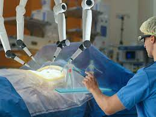
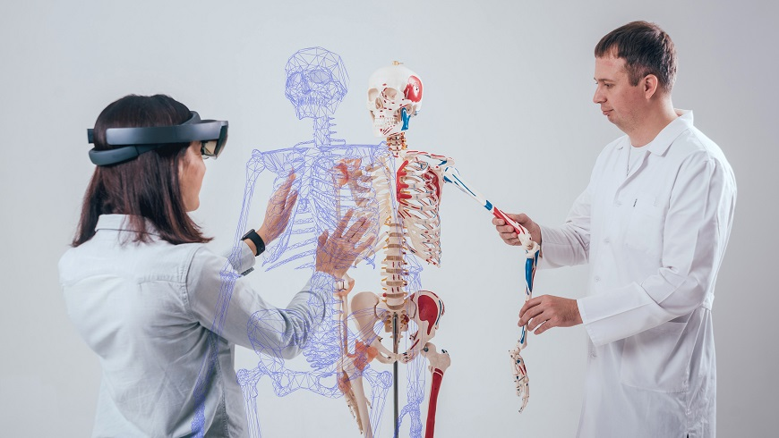
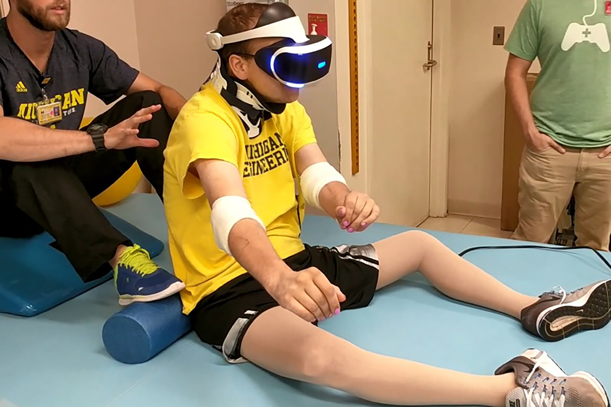
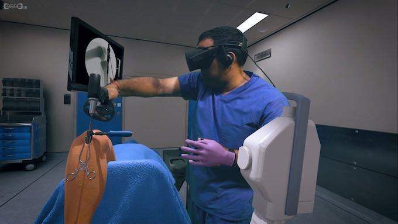
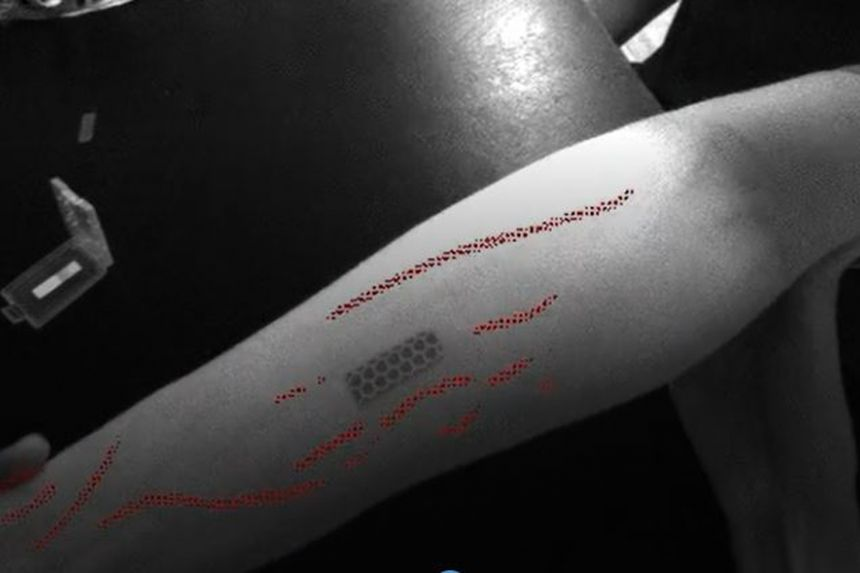

WELCOME TO SUNSHINE HOSPITAL(VR/AR HOSPITAL)

Uses of VR/AR in Healthcare

Patient experience is one of those elusive things that barely gets mentioned when it comes to talking about how VR & AR can make the Healthcare system better. However, in reality, patient experience is the one field that gets the most out of the implementation of VR & AR to the operation. Immersion and engagement matter a lot for successful treatment, and it is often the one thing that gets limited attention due to its relatively inconsequential influence in the grand scheme of things. I mean - when it comes to matters of life and death, customer experience is not the thing that comes to mind first. Augmented Reality solutions can significantly improve the overall patient experience and make it less problematic by adding pop-up information and navigating features among other things. The other way, AR & VR healthcare applications can improve Patient Experience is via an extension. As you know, chronic patients often experience the discomfort of being partially left to their own devices in-between the procedures. VR & AR can make their experience a little bit less uncomfortable and probably more exciting.
FACILITIES AVAILABLE:
1.General checkup Via video call
2.Medical Consultation via call or video call
3.Basic operation via video call
Benefits VR/AR Hospital
For example, AR & VR can be used to maintain better communication with their relatives. Also, Virtual reality physical therapy can be used to spend time in places outside the hospital in an elaborate variation of the “try before you buy” scenario (you can read more about this in our article about VR & AR tourism). On the other hand, AR can help the patient to keep track of their vital stats and stay tuned with their therapy progress in a more engaging manner. The easiest way in which Augmented reality can neatly fit into the healthcare system is through visualizing data. Case in point - visualized patient data with a possibility of live stats. Relevant patient information is one of the crucial elements that enables effective treatment. However, even with the most advanced data management systems - the scope of gathered information might be impenetrable or confusing for the doctors. Usually, it is all placed on numerous monitors surrounding the patient and control rooms. Augmented reality can show the stats directly on the patient’s body - pointing out the problematic points and showing relevant stats.
Application of VR in Healthcare
1.VR for Medical Education
Virtual reality makes for more effective theoretical learning of medical students and starting-out healthcare professionals. With VR, learners can inspect 3D medical models in the details, which can’t be reproduced in physical models, or learn to communicate with AI-controlled virtual patients, whose attitude and behavior can be easily altered for different learning purposes (e.g., communication with patients who are non-native English speakers).
How VR for medical education works:Any virtual learning session can be held in groups or individually and guided either by a real tutor, who is also connected to the VR app or by a virtual preprogrammed tutor controlled by the AI algorithms.
Use cases:
• Anatomy learning.
• Medical social skills learning.
2.VR for Medical Training
VR software that focuses specifically on practical medical training helps medical school graduates and healthcare professionals alike acquire hands-on skills in risk-free conditions. This type of healthcare VR allows simulating scenarios that are difficult, dangerous, or expensive to recreate in real life.
How VR for medical training works: Upon entering a VR app’s simulated environment, a user becomes a part of a training scenario that expects them to complete predetermined steps in, for instance, performing a medical procedure or handling medical equipment. A separate analytical module continuously records the taken actions and assesses a medical professional’s performance based on set criteria.
Use cases:
• Medical procedure simulation.
• Emergency case simulation.
• Medical equipment use training
3.VR for Surgery
By allowing surgeons to perform different types of mock-surgeries in the virtual space, VR helps eliminate practical skill deficiency faster. Surgeons can become skilled professionals without using expensive onetime use mannequins for training.
How VR for surgery works:With the help of haptic controllers, a surgeon performs a virtual surgery in a virtual operating room. From start to finish, software guides a user through the necessary steps, letting them remember the right sequence of actions. The VR app can also be used for explaining the surgery process to patients.
Use cases:
•Surgical training.
•Pre-surgical planning.
•Medical device marketing
4.VR for Pain Management
Virtual reality pain management apps help lower the level of pain or extreme discomfort by effectively diverting a patient’s attention. This type of VR helps minimize the use of potentially harming painkillers and reduce healthcare costs.
How VR for pain management works: After being immersed in the VR simulation, a patient can either become a part of an interactive gamified experience or transferred to a highly realistic environment with a soothing atmosphere that, together with audio stimulation, helps put their mind at ease.
Use cases:
• Chronic pains.
• Acute pains.
• Medical procedure pain.
• Mental pain and anxiety.
5.VR for Physical Therapy
Virtual physical therapy can offer patients a wide range of exercises – from general orthopedics to injury-recovery. The exercises can be created for specific age-groups too, thus helping children to develop motor skills and older patients – to preserve their agility. Special sessions can also be created for people, who are learning to use a cane or a prosthetic limb.
How VR for physical therapy works: All exercises can be supervised by either an AI-based virtual instructor or a real instructor, who joins the VR sessions remotely. A comprehensive analytics system continuously monitors a patient’s condition and ensures that the exercises do not harm a patient's health in any way.
Use cases:
•Sports injuries.
•Child care/Geriatrics.
•Adaptation to assistive devices or prosthetics.
Application of AR in Healthcare
1.Helping to train healthcare professionals
Throughout the COVID-19 pandemic, AR has proven to be a critical tool in developing skills of medical students, and has potentially accelerated the adoption of AR technologies for training purposes. During this time, one of the impacts of this highly contagious and potentially fatal virus within the hospital environment was that medical students were no longer able gain direct access to ward rounds, which has traditionally been central to their learning. To address this critical threat to the skills development of future healthcare professionals, Barts Health NHS Trust and the Queen Mary University of London took an innovative approach. They introduced virtual ward rounds for students – Professor Shafi Ahmed would don a Microsoft Hololens headset during his ward rounds, with high quality content livestreamed to students in a lecture theatre.
2.Assistance tools for surgeons
The ability to access patient data at speed is the key to its successful adoption of AR in surgical procedures, where every second counts. As Giovanni Badiali explains: “We are on the edge of a medical revolution in terms of surgical navigation… We could be working seamlessly in the future. For surgeries, this means a great gain of time and a reduction of mental work to do the connections between the virtual and the real. All the information arrives in real time. Time is the greatest beneficiary of this technology.”
3.Vein Detection
AR-driven technologies such as Accuvein can be applied to address these issues. This technology uses a combination of a laser-based scanner, processing system and digital laser projection housed in a portable, handheld device. This gives practitioners the chance to view a virtual real-time image of the underlying vasculature on the surface of the skin. This gives them the chance to detect veins more effectively, as well as providing guidance for undertaking intravenous injections with minimal discomfort for the patient.